Structures
A variant-effect map is read against the protein's structure. MaveScape draws structures itself, with the viewer it shares with Proteoscope, and needs no other program.
Opening a structure
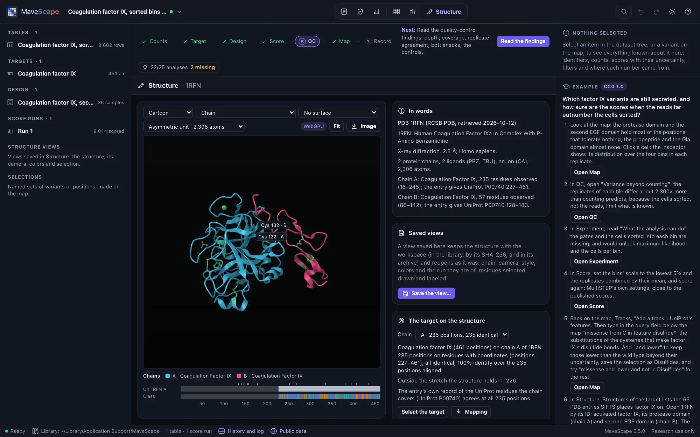
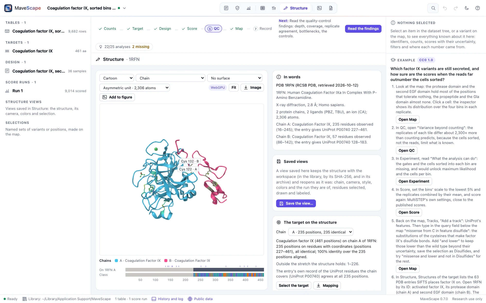
resn CYS and drawn as sticks, the pair that joins its two chains labeled.In Structure, open one of:
- A PDB entry, by its ID (
2VWF, or the extended formpdb_00002vwf): its coordinates, chains and biological assemblies, from RCSB PDB. - An AlphaFold DB model, by a UniProt accession: the field holds the target's when it has one (Experiment, Target). MaveScape asks AlphaFold DB which model is the latest, then for that model.
- A file of your own: PDB, mmCIF or BinaryCIF, gzipped or not (
.pdb,.ent,.cif,.mmcif,.bcif, each also with.gz). Open a file…, or drop it on the window: a structure dropped opens in this view, whatever view is shown.
A PDB ID or an accession is all that is sent, through the MaveScape program (Public data); each structure is kept in the cache, compressed as the service sent it, and opens offline after that. One structure is shown at a time. It stays for the session, through the other views; save a view of it (below, Saved views) to keep it with the workspace.
In words, beside the view, says what was opened and where from: the entry's title, how it was determined (method and resolution, or that it is a predicted model), its chains with the residues observed in each and the UniProt residues the entry says each covers, and what else it holds (DNA, ligands, ions).
The residues keep the entry's own numbering. An entry may number them otherwise than UniProt does: 1RFN numbers factor IX's protease domain as chymotrypsin is numbered (16–245), where factor IX's own positions are 227–461. The mapping, below, places the target's positions on them all the same.
Structures of the target, beside the view, lists what covers the workspace's target when it has its UniProt accession (Experiment, Target): its AlphaFold DB model first, then the PDB entries PDBe's SIFTS places it on, those covering the most of the target first, then the best resolution. Each row gives the method, the chains and the target positions the entry's sequence covers, observed or not; Open opens it, with the target mapped on the chain listed. The list comes from PDBe through the MaveScape program (the accession is all that is sent), and is cached.
The target on the structure
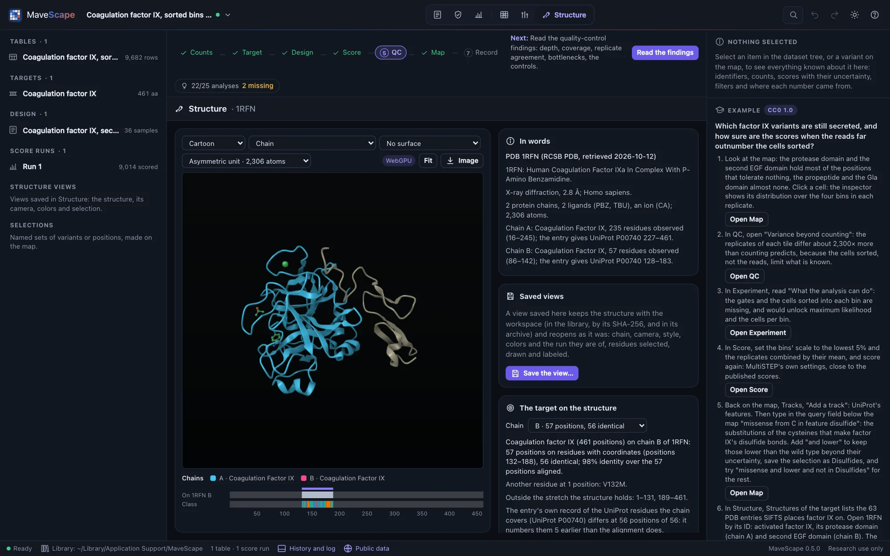
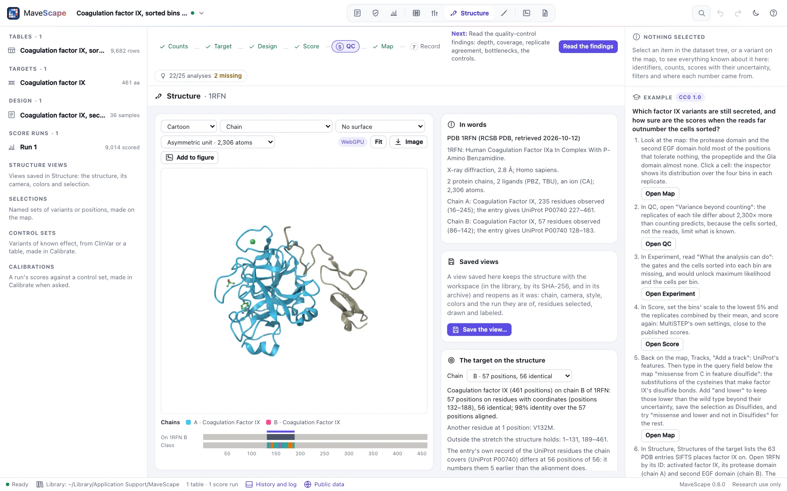
When a structure opens, MaveScape aligns the workspace's target to each chain: its protein (a DNA target's translation) against the chain's sequence as the entry gives it (SEQRES), with the residues observed marked, by Proteoscope's overlap alignment (BLOSUM62, affine gaps, no cost for the ends), so a structure of part of the target, or a construct numbered its own way, maps all the same. A chain holds the target when at least five of its residues, and half of those aligned, are identical. The chain that holds the most of the target is chosen; Chain chooses another. Each target position is then:
| State | What it means |
|---|---|
| On the structure, identical | On a residue with coordinates, the target's amino acid |
| On the structure, another residue | On a residue with coordinates, another amino acid; the entry's reason when it records one (engineered mutation, conflict, expression tag…) |
| Not observed | In the entry's sequence, without coordinates (a disordered loop, a terminus) |
| Missing from the structure's sequence | Inside the stretch the chain holds, but not in its sequence: a loop removed from the construct |
| Outside | Before or after the stretch the chain holds |
A position is ambiguous when an alignment that scores the same places it otherwise: a gap that could slide along residues scoring the same on either side. Where PTEN's loop was removed from 1D5R, the construct's valine scores as well against T286 as against A309: both are ambiguous, and SIFTS takes the one, the entry's own record the other.
The pane says it in words: the positions on the structure (with the reference's numbering when the target has an offset), the differences, the stretches not observed, missing and outside, the ambiguous positions, and whether the entry's own record of the UniProt residues each chain covers (its DBREF or struct_ref_seq) agrees, residue by residue, with the alignment. On 1RFN's light chain it does not: the record numbers it five earlier than the alignment and SIFTS do. Select the target, the differences or the ambiguous selects their residues; Mapping writes the mapping as a table, one row per target position (FORMATS.md). Pointed at, a residue says its target position.
Positions are selected under Residues too: pos 30-40 (the target's positions) and uniprot 188-198 (the reference's: UniProt's, when the target is placed in its entry), on the chain mapped. A selection is kept, position by position, when another structure is opened: the SH3 domain's positions 30–40, selected on 2VWF, are selected again on GRB2's AlphaFold DB model, at its residues 188–198.
Scores on the structure
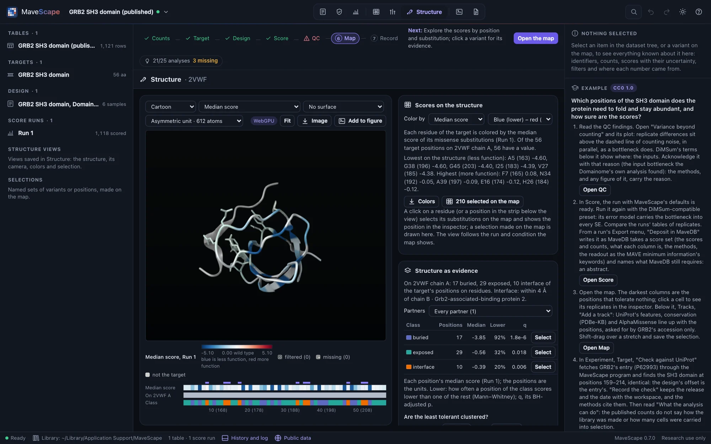
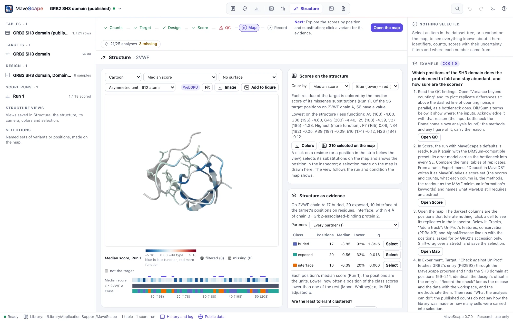
With a score run, each residue of the target can take its position's scores. Under Scores on the structure (or Color by, above the view), color by:
| Coloring | A residue's value |
|---|---|
| Median, mean, lowest or highest score | Of its position's missense substitutions scored, with low confidence or not (at the first methionine, its start-lost substitutions). A stop truncates the protein wherever it is, so it is left out; choose it as one substitution |
| Fraction abnormal-like | The share of those substitutions that are abnormal-like: below (or above) a threshold you set, for research; or, for a MaveDB record's scores as published, by one of its calibrations' abnormal classes, as published |
| Substitutions scored | How many of its missense substitutions are scored |
| One substitution | The score of its substitution to an amino acid you choose, or to a stop; the wild type's own residue is drawn in the wild type's color |
| Uncertainty | The median standard error of its substitutions' scores |
| Disagreement | The median difference of its substitutions between the two sides Compare shows (on one scale), as the map of their difference colors it |
| QC state | How much of it was measured: every substitution scored, some with low confidence, some filtered or missing, fewer than half scored |
The colors are the map's: its palette (blue–red or purple–orange, chosen here or on the map) and its scale, centered on the wild type, so a residue is the color of a cell with its score. The other values run through viridis. As on the map, what was not measured is never drawn as no effect: a position whose substitutions were all filtered is dark gray, one with none measured mid gray, neither a color of the scale, and a value from scores of low confidence only is drawn paler. Residues that are not the target's (other chains, ligands' neighbors, a tag) and positions not designed are light gray. The legend below the view names each, with how many of the target's positions on the structure are in it; every chain that holds the target is colored.
The scores are those the map shows: its run, and its condition or contrast. Choose another under Scores on the structure, or on the map, and both follow. The disagreement is Compare's pair, with its filters and scale.
Below the view, a strip lays the target's positions out in order: their colors, which are on the structure (a darker band) or in its sequence but not observed, and, on an AlphaFold DB model, each residue's confidence (pLDDT) in its four bands, beside its scores. Point at the strip for a position in words; click one, or drag over a stretch, to select its residues.
One selection serves the map and the structure. Click a residue (or a position of the strip) and its position's variants are selected on the map, as at 25 selects them, and the inspector shows the position: its substitutions' scores, how many were scored, filtered or missing, and its residue on each chain. A selection made on the map, by a click, a shape or a query, is drawn on the structure when you come back to it; residues selected in words here are selected on the map too. With the residues colored by scores, a selection is shown by its side chains, in their own colors, rather than by a tint that would change what the colors say.
In the GRB2 example, colored by the median score on 2VWF, the least tolerant residues (A163, G196, G203, I183) pack the domain's core, while the ten residues within 4 Å of the Gab2 peptide (byres (chain A and protein and within 4 of (chain B and protein)); protein keeps the waters each chain is given out of it) score nearer the wild type than the rest: an abundance assay does not see binding. Colors writes each position's value, state and color, with its residue (FORMATS.md).
Structure as evidence
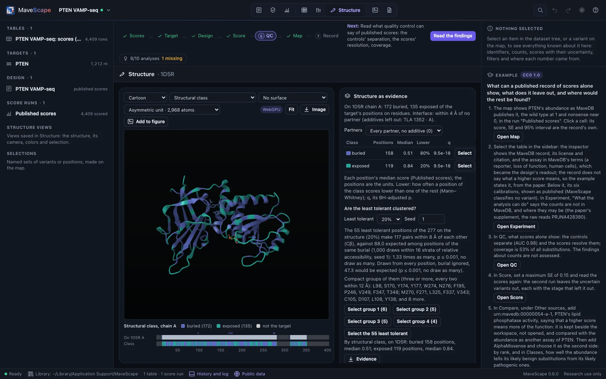
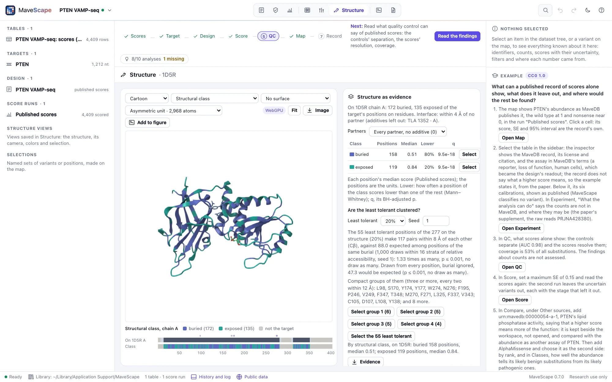
Once the target is mapped, MaveScape reads what the structure says of each of its positions on the chain mapped, and shows it under Structure as evidence:
| Measure | How |
|---|---|
| Secondary structure | DSSP's eight states (Kabsch & Sander 1983), by Proteoscope's DSSP |
| Accessibility | Each residue's water-accessible area, by Shrake and Rupley's method with DSSP's atom radii and a 1.4 Å probe (1,000 points a sphere), in its chain alone and among every protein chain of the structure; relative to the residue's largest (Tien et al. 2013) |
| Exposure and disorder | StructureMap's part-sphere exposure (pPSE: the Cα atoms within 12 Å in a 70° cone of the side chain) and its smoothed full sphere, 34.27 or less a disordered region (Bludau et al. 2022); for an AlphaFold DB model, read with its aligned error (PAE), fetched with it |
| Confidence | A predicted model's pLDDT |
| Partners | The nearest heavy atom of another chain, a ligand or an ion; within 4 Å, the residue is at that partner's interface, and its contacts are typed (hydrogen bonds, salt bridges, π-stacking, hydrophobic and others, by Proteoscope's port of PLIP's rules). Water is never a partner, and common crystallization additives (sulfate, glycerol, tartrate and others) only when chosen under Partners |
Each position then has one structural class: disordered (in a predicted model's disordered region), interface, buried (relative accessibility in its chain alone below 0.25) or exposed. A position the structure does not hold has none. Color the structure by them (Color by, Structural class), read them in the strip below the view, or point at a residue: it says its class, accessibility and secondary structure, and the inspector, for a residue picked, its partner and contacts.
Beside the map. The same become tracks of the run's map (Map, Tracks): the structural classes and DSSP's secondary structure, shown, and the relative accessibility, exposure, distance to a partner and a model's pLDDT, to show. They are the structure shown's, for the session. The query language reads the classes and the secondary structure as features: missense and in feature buried and lower, in feature helix (Selections).
The scores by class. With a score run (the run and condition the map shows), each class's positions are read by their median score: how many, their median, and how often a position of the class scores lower than one of the rest (where higher is less function, higher), by Mann–Whitney's test, with Benjamini and Hochberg's adjustment across the classes. The positions are the units: a position's substitutions are not counted apart. Select selects a class's residues, and so its variants on the map.
Are the least tolerant clustered? The least tolerant positions (the lowest 20% of medians, or 10% or 30%) are buried more often than the rest, and buried positions lie close together, so they would cluster whatever their scores. The test asks whether they lie closer together than positions of the same burial: it counts their pairs within 8 Å of each other (Cβ, Cα for glycine) and draws as many positions at random, as many from each stratum of relative accessibility (about twelve positions a stratum, 4 to 16 strata), 1,000 times with a seed you can change. The p-value is the share of draws with as many pairs. The same drawn from every position, burial ignored, is given beside it, to show how much burial alone explains. Compact groups of them (every two within 12 Å) can be selected.
In GRB2's SH3 domain (2VWF) the least tolerant are the core: 26 pairs, against 8.7 from any positions but 21.5 from positions as buried (p 0.11). In PTEN (1D5R), 117 pairs against 88.0 as buried (p 0.001): one group joins its phosphatase and C2 domains. Evidence writes each position's measures and class, with its median score (FORMATS.md).
Saved views and figure panels
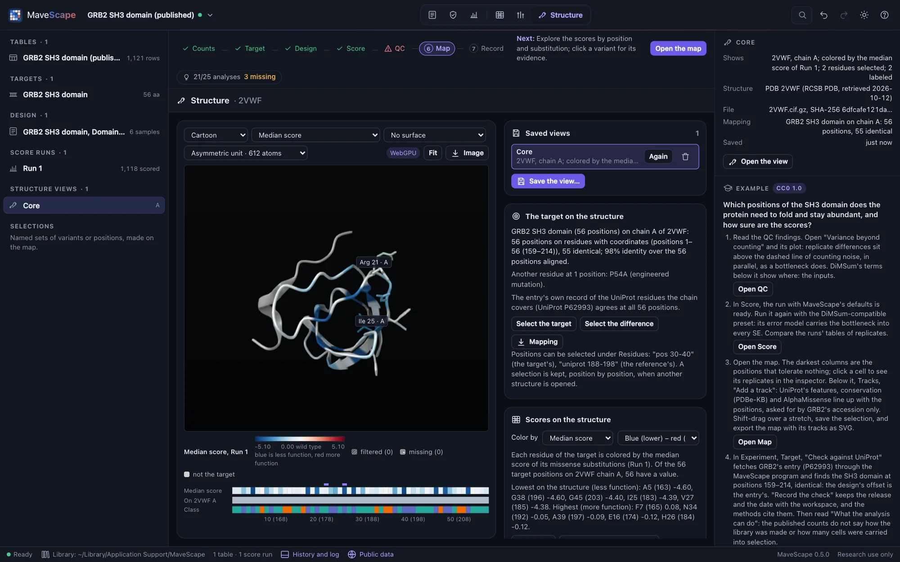
Save the view…, under Saved views, keeps the view shown with the workspace, under a name. It keeps the structure's file in the library by its SHA-256, as it came (RCSB's compressed mmCIF, AlphaFold DB's file and the model's aligned error, or your file), and records the assembly, the chain and the target's mapping onto it, the camera and the view's size, the style, the colors and the run and condition (or contrast) they are of, the surface, the residues selected, drawn, hidden, labeled and focused on, and the partners and settings of Structure as evidence. A view saved under a name already used is saved again. Saving and removing views are in the workspace's history.
Saved views are listed in the pane and in the dataset tree, under Structure views; the inspector describes one, and Open reopens it as it was saved: the structure from the library, offline. The target is mapped again, and if the mapping is not the one the view was saved with, the view says what differs. A view of a run no longer in the workspace is colored by the run the map shows, and says so. The structure stays with the workspace while a view shows it.
The workspace archive (.msz) carries each saved view's structure, by its SHA-256, unless you name the structures by their checksums only (Export, Workspace archive): then a PDB entry or AlphaFold DB model is fetched again by its ID when its view opens, and its SHA-256 compared with the one saved; if the service has revised the file, the view is drawn on today's and says so. A file of your own must be opened again. The methods name each structure, when it was retrieved and its file's SHA-256, the target's mapping onto it (the alignment, the chain, the positions on residues, the identity and the differences), each saved view and what it is colored by, and how what the structure says of each position was read, each method cited.
Image, Figure panel, writes a PNG of the view four times its size, the legend of its colors drawn below it, and what it shows written into it (a text chunk, mavescape-figure-panel): the structure and its file's SHA-256, the view, the coloring and the run it is of (by its output's SHA-256), the legend and the image's size. A saved view's panel is drawn at the size it was saved at, so the same view gives the same image on any screen, pixel for pixel. Wave 6's figures are built from these panels.
Open in Proteoscope

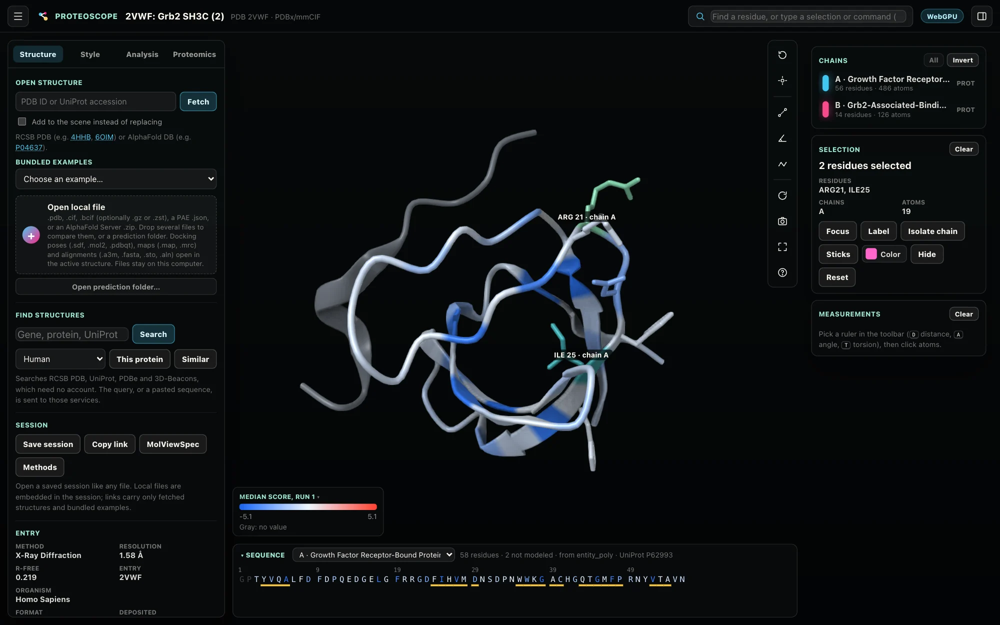
MaveScape needs no other program. For what Proteoscope does beyond it (wwPDB validation reports, density maps, superposition, ligands and their interactions, predictions ranked), the Structure view hands the view over to Proteoscope when it runs on this computer: a Proteoscope button appears beside Image. MaveScape looks for it on the ports Proteoscope takes (8765 to 8814) and asks only which version it is; when it is not running, nothing is offered and nothing else changes (NETWORK.md).
What it hands over is Proteoscope's own session, in a link opened in a new tab: the PDB entry or AlphaFold DB model, which Proteoscope fetches by its ID; the scores the structure is colored by as Proteoscope's Custom residue data, titled as the legend is ("Median score, Run 1"), on its blue–white–red scale over the map's range, centered on the wild type (filtered and missing positions without a value, gray); the style, the residues drawn as sticks, hidden, selected, labeled and focused on; and the camera. Colored by the QC state or the structural classes, the residues keep MaveScape's colors. Nothing goes to Proteoscope but the link, which stays on this computer.
- Proteoscope 0.10, the version MaveScape was tested with, opens all of it. Another version gets the structure alone in the link, and the rest as a session file (
2VWF.proteoscope.json) to open in it. - A file of your own cannot travel in a link: MaveScape writes the session file, the file embedded in it, and you open it in Proteoscope (Open local file, or drop it on its window).
mavescape --proteoscope offstops the looking;--proteoscope 9000-9010looks on other ports, for a Proteoscope started on one.
Try it with the GRB2 example, Proteoscope running:
- In Structure, open 2VWF and color it by the Median score; select
pos 20-26and draw it as Sticks. - Click Proteoscope. Proteoscope opens 2VWF with the 56 median scores on chain A, the Gab2 peptide gray, the residues drawn as they were, from the same angle.
- In Proteoscope,
interface A Blists the contacts between the SH3 domain and the peptide, the residues whose scores sit near the wild type;validateloads the entry's wwPDB validation report, to see whether a residue you read is well modeled.
Drawing it
- Style: cartoon, ball and stick, sticks, spacefill or a trace of the backbone. Ligands are drawn as balls and sticks with the cartoon; water is hidden.
- Color by the scores (above), or by chain, molecule (entity), position from N to C terminus (rainbow), secondary structure, molecule type, element, residue class, hydropathy (Kyte–Doolittle), nucleotide, B-factor, or a predicted model's confidence (pLDDT). The legend below the view names the colors.
- Surface: the molecular surface (SES), the solvent-accessible surface, the van der Waals surface or a Gaussian surface, computed in the background and colored as the atoms under it.
- Assembly: an entry's biological assemblies, built from its asymmetric unit by the entry's own operators (hemoglobin's tetramer from the αβ dimer of 1HHO). An assembly of more than 300,000 atoms is listed but cannot be built.
- Image saves the view as a PNG at twice its size.
To move it: drag to rotate, drag with ⇧ or the right button to move it, the wheel or a pinch to zoom. With the view focused, the arrow keys rotate it, + and − zoom, and F fits the whole structure; Fit does too. Point at an atom for its residue, secondary structure and B-factor (a predicted model's pLDDT).
Residues
Click a residue to select it; with ⌘, Ctrl or ⇧, add it to the selection or take it away. Double-click one to focus on it. Or type which residues in the field under Residues, in the selection language Proteoscope uses (PyMOL's words, ChimeraX's atom specs), and Enter or Select:
| Words | What they select | Example |
|---|---|---|
chain, resi, resn, name, elem | Chains, residue numbers (ranges and lists), residue names, atom names, elements; values joined by + or , | chain A and resi 40-80 |
/A:315@OG1 | An atom spec: chain, residue, atom | /B:248 |
protein, nucleic, ligand, ion, water, hetatm | Kinds of molecule | ligand |
backbone, sidechain | Parts of residues | sidechain and resn ARG |
helix, sheet, turn, coil | Secondary structure: the entry's own, or DSSP's where it gives none | helix and chain B |
within, around, beyond | Atoms within (or beyond) a distance in Å of others | within 4 of nucleic |
byres, bychain | Whole residues or chains of the atoms selected | byres (protein and within 4 of ligand) |
b, q, plddt | B-factor, occupancy, a predicted model's confidence, compared with a number | plddt < 70 |
pos, uniprot | The target's positions, or the reference's, placed by the mapping on the chain mapped | pos 30-40 |
selected, focus | The residues selected now; those focused on | within 5 of selected |
and, or, not, parentheses | As usual; words side by side are joined by and | resn CYS and not chain B |
A selection that does not parse is named where it goes wrong; one that selects nothing says so. Then, for the residues selected:
- Draw as… sticks, ball and stick or spacefill over the rest, hidden, or as the rest again.
- Label them (again: take the labels away).
- Focus: the camera on them, with their neighbors within 5 Å drawn with their side chains; Whole structure goes back.
AlphaFold DB models
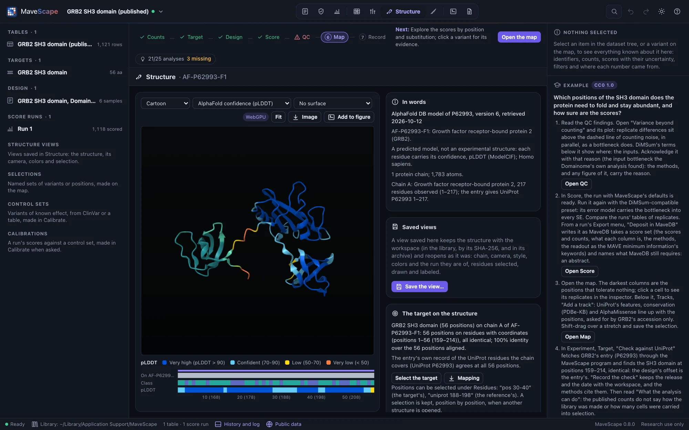
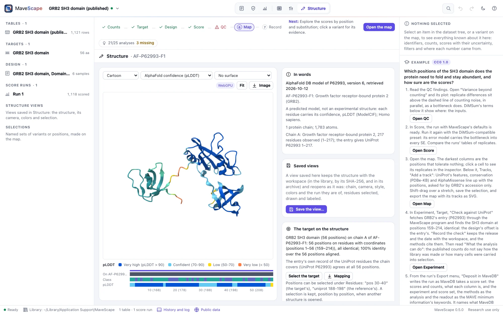
A predicted model opens colored by its confidence, each residue's pLDDT in AlphaFold DB's four bands: very high (above 90), confident (70 to 90), low (50 to 70) and very low (below 50, often a region without a fixed structure). The words say it is a prediction, not an experiment. A model numbers its residues as UniProt does, from 1.
WebGPU and the Canvas renderer
The view draws with WebGPU where the browser offers it (Chrome, Edge and Brave; Safari from macOS 26): spheres and cylinders drawn exactly, the cartoon, surfaces, ambient occlusion and picking. Where it does not, or with ?renderer=canvas added to the page's address, it draws with the Canvas renderer, without surfaces or ambient occlusion. The badge above the view says which; pointed at, the Canvas badge says why. If the browser loses WebGPU while the view is open (its graphics process crashed or was reset, as after a driver update), the view goes on with the Canvas renderer and says so; reloading the page tries WebGPU again. Both renderers are Proteoscope's, copied into MaveScape with their tests.
Scripts
Remote control's open_structure opens a PDB entry (pdb) or an AlphaFold DB model (alphafold: an accession, or "target" for the target's), optionally an assembly, and returns the structure in words. set_structure changes the style, color, surface and assembly, and selects residues (select, in the language above), draws them (show), labels them (label) and focuses on them (focus). open_files opens a structure file. find_structures lists the structures that cover the target; map_structure maps it (on a chain) and returns the mapping in words and by position; open_structure takes the chain to map it on; export with what: "structure-mapping" writes the mapping. set_structure's color takes the scores' colorings too (median, mean, minimum, maximum, fraction with a threshold and side or a calibration, count, substitution with the substitution, uncertainty, disagreement, qc), and pick picks a residue as a click does ("A 183"); export with what: "structure-scores" writes the coloring. structure_evidence returns the structural classes (with a partner), the scores by class and the cluster test (a fraction, a seed); set_structure's color: "class" colors by class, export with what: "structure-evidence" writes each position's measures. save_structure_view, open_structure_view and remove_structure_view keep, reopen and remove views by name; export with what: "structure-image" writes a figure panel (a scale, the legend), and the archive's include_structures names the structures by their checksums. proteoscope_link hands the view to a Proteoscope running on this computer (the link to open, or the session for a file of yours), and export with what: "proteoscope-session" writes the session file whether Proteoscope runs or not. get_state includes the structure shown, the mapping and the scores it is colored by (Remote control).
How it was validated
The viewer's modules are Proteoscope 0.10.0's, copied with their tests, which pass here (66 of them): the parsers (PDB, mmCIF, BinaryCIF), residues and bonds, chemistry, DSSP, the cartoon and scene, surfaces and areas, and the selection language. The validation suite structures reads each example protein's PDB entry and AlphaFold DB model as the page does, from the cache: each chain holds its target on the UniProt residues its entry gives; each model's mean pLDDT is within 0.05 of AlphaFold DB's own and its share of residues in each band within 0.01. 2VWF read as gzipped mmCIF, as RCSB's PDB-format file and as BinaryCIF gives the same atoms to 0.001 Å, and GRB2's model the same as mmCIF and BinaryCIF. Each assembly is built with the atoms it was estimated at; hemoglobin's tetramer is the dimer moved whole by symmetry. On 1RFN, the bonds drawn between cysteines' sulfur atoms are the entry's own disulfide records; on 1TUP, the residues that byres (chain B and protein and within 4 of nucleic) selects are those every distance between atoms finds, R248 and R273 among them. The remote session opens every example protein's entry and model in the page, with WebGPU and then with the Canvas renderer, each with the atoms Node reads and an image that is not empty.
The mapping (wave 5, slice 2): each example's target aligned to its PDB entry places every residue where SIFTS does, by PDBe's residue-level mapping read from its updated mmCIF with gemmi (an mmCIF reader independent of MaveScape's), and calls not observed the residues SIFTS does; the one place they part, PTEN's join in 1D5R, is an ambiguous one, where SIFTS takes the other alignment as good. On each AlphaFold DB model every position is on the residue numbered as its reference position, with another residue exactly where the target differs from the model's sequence. 2VWF's engineered mutation, 1RFN's light chain and its record five off, and PTEN's removed loop are reported as the entries record them. The structures that cover each target are ranked from PDBe's answers in the cache, and the remote session maps, lists, keeps a selection across structures and writes the mapping as Node does.
The scores on the structure (wave 5, slice 3): each example's run, scored in Node, is colored on its PDB entry by every coloring, and every residue of every chain that holds the target has the value its position's missense substitutions have in the run's results, read without the map's model, and the map's color for it; every position with nothing scored is gray, at least 100 (in RGB) from the wild type's color. Each example's ten least tolerant positions, selected on the map, are drawn on the residues SIFTS places them on, and picked there select the same positions again. PTEN's fraction abnormal-like by two of its published calibrations is the share of scores in the abnormal ranges as the record's own JSON gives them. The GRB2 example's account (the core packed, the peptide's neighbors tolerant) is computed from the atoms. The remote session colors 2VWF in the page, each residue as Node colors it, picks a residue, draws a map query's selection and writes the coloring as Node does.
Structure as evidence (wave 5, slice 4): for each example's entry, DSSP's own output (the DSSP databank, DSSP 4.6.1, read with gemmi) gives every residue the code Proteoscope's DSSP gives it but five in 1D5R, where DSSP 4 calls a π-helix (its polyproline helices, which Proteoscope's does not assign, aside); the accessible area is within 0.6–0.9 Ų of DSSP's on average, with no bias. Proteoscope's tests of its exposure (half-sphere exposure as Biopython's) and of its interactions (PLIP's) pass here. Each residue's nearest partner is as every pair of atoms gives it. Mann–Whitney's test and Benjamini–Hochberg's adjustment equal SciPy's to 10⁻¹². On AlphaFold DB models read with their aligned error, PTEN's C-terminal tail and p53's terminal regions are disordered and their folded domains not. The cluster test was calibrated on simulated maps on 1D5R and 1TUP: with scores that depend on burial alone, p ≤ 0.05 in 3–6% of maps (in every map, burial ignored), and a planted patch found in 62–71%. The remote session reads 2VWF's evidence in the page as Node does.
Structures in the record (wave 5, slice 5): a saved view of each example protein's PDB entry and AlphaFold DB model goes through the workspace archive with its structure's file, the same bytes, and the mapping made again from each file is the one its view was saved with; named by checksum only, each structure fetched again by its ID is the file recorded. The methods of the GRB2 example's run with a view of 2VWF name the entry, its file's SHA-256 and the mapping as made again. In the page, a view of 2VWF saved, changed and opened again gives the same figure panel, pixel for pixel, as when it was saved; so does the view opened from the workspace's archive, and a view whose file is fetched again by its ID finds the SHA-256 it was saved with.
Open in Proteoscope (wave 5, slice 6): for each example's run on its PDB entry and its AlphaFold DB model, the session MaveScape hands over carries each position's median score, as the run's results give it, on the residue Proteoscope's reader keys it on, every scored position on a residue with one; the link's session reads back as sent. The program's tests find Proteoscope by its startup answer, the version tested and others, and nothing where another program, MaveScape itself or no program answers. The remote session, against a stand-in for Proteoscope, checks the link, the residues, the camera, the button and its new tab, another version, a file of your own and Proteoscope stopped. With Proteoscope 0.10.0 itself (validation/proteoscope-handoff.mjs, run where it is installed): it opens the link of 2VWF and of GRB2's AlphaFold DB model, and the session file of a file of your own, with every value on a residue it reads, the residues drawn, hidden, focused on, selected and labeled, and the camera as MaveScape had them.